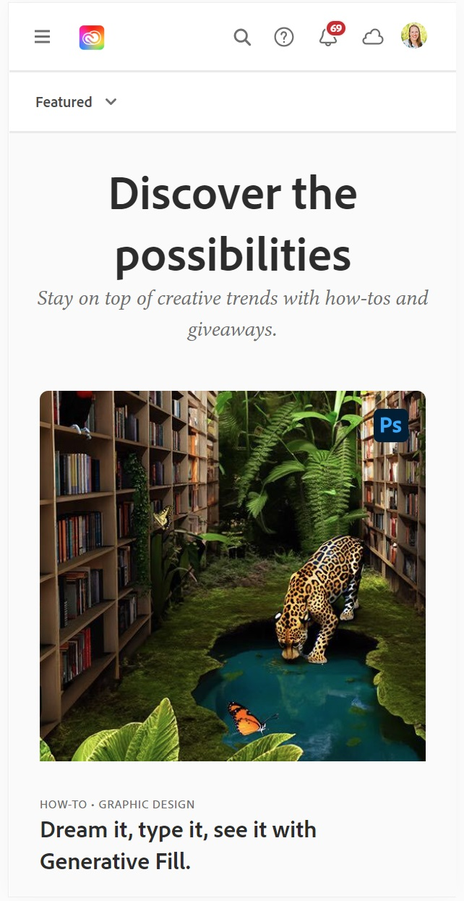

Rule of Thirds
Magnolia
The header image on the Magnolia site uses the rule of thirds both in the image composition and in the placement of the “Go Forward into Fall” text, which ends at about the third line. The page itself is divided into approximate thirds as well within the viewfinder.
White Space and Clean Design
Apple
Apple always does a great job incorporating white space and breathing room, not only in their website, but also in their print materials, packaging, and even store design. This MacBook Air page from apple.com shows white space in between and surrounding each text and image element. This gives the page a calm feeling and is never overwhelming, highlighting the product images.
Alignment
Adobe Creative Cloud
Adobe does a great job with alignment on their creative cloud page. It’s more obvious on the desktop version as the images are arranged into crisp columns. In this mobile version you can see how the text and images and navigation icons all line up neatly. There is clearly a grid being used to help everything line up beautifully.